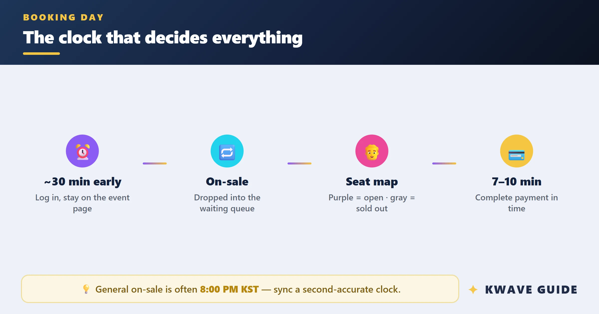
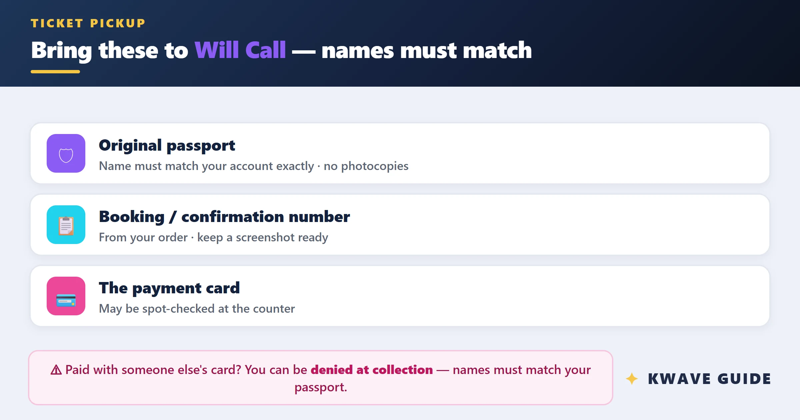

为了一张韩流演唱会门票，我在 MelonTicket 上算了三笔账
MelonTicket 本身免费，但抢票这件事的隐性成本远超想象。排队时间、信用卡风控、现场取票的机票住宿——把这些折算成钱，再决定要不要蹲。
MelonTicket 不收你一分钱订票手续费——这是它唯一"免费"的地方。真正让我在开票前一周就开始焦虑的，是排队等待室里可能耗掉的 30 分钟、信用卡风控把我拒之门外的那一秒、以及"护照英文名填错一个字母就白飞一趟韩国"的惊悚规则。
它到底值不值得掏钱？更准确的问法是：为了一张票，你愿意花多少时间、准备多少东西、冒多大风险？ 我把这半年观察到的三类用户分别算一下。
先搞清楚它是什么——以及它不替你做什么
MelonTicket官网是韩国最大的演出票务平台，全球版专门对付海外粉丝。它的基本逻辑是：开票瞬间把所有人扔进虚拟排队等待室，按进入顺序放行，放行进选座页后给你 5 分钟锁定期——超时自动释放座位给下一个人。免费、不抽成，但它不承诺你能抢到，也不替你解决付款失败、护照不匹配、邮寄仅限韩国这些硬伤。
整个流程你要自己走完：提前从官方下载装好网页端书签，注册账号（填对护照英文名）→ 绑定一张能跨境的卡 → 开票前 30 分钟守在详情页 → 开票后在等待室里盯着屏幕什么都不能做 → 放行后秒点座位 → 5 分钟内完成付款 → 演出当天带护照去现场取票。任何一个环节掉链子，前面的准备全部归零。

定价拆解：免费，但隐性账单按小时计
它没有订阅档位、没有 VIP 加速通道、没有付费优先排队——从"软件本身是否收费"这个角度看，MelonTicket 确实是零门槛。但真正的成本藏在抢票前的准备、抢票时的消耗、抢票后的风险里：
| 环节 | 你要投入的 | 风险 |
|---|---|---|
| 注册 | 10 分钟（填护照名、绑卡） | 护照英文名错一个字母 → 现场取票被拒 |
| 开票前准备 | 提前 1~2 天小额测卡、关掉浏览器扩展、备好两台设备 | 信用卡风控拦截、扩展干扰弹窗 |
| 排队等待 | 提前 30 分钟占位 + 开票后 10~30 分钟等待 | 刷新/切标签 → 踢回队尾，热门场次可能彻底出局 |
| 选座付款 | 5 分钟锁定期内完成 | 付款失败 → 座位被释放给下一个人 |
| 取票 | 演出当天 1~2 小时到剧场 Will Call 柜台 | 护照忘带、姓名不匹配 → 无法入场 |
把这些折算成钱：一张票面价值 15 万韩元（约 800 人民币）的内场票，你至少要投入 45 分钟的前置时间 + 可能一张往返首尔的机票。这还没算抢不到票时白费的所有精力——热门艺人（IU、BLACKPINK、防弹少年团）的场次，开票 1 秒内就被抢空，你排 30 分钟队也可能只是跟系统玩了半小时的"盯着屏幕什么都不能按"。
三类用户的账怎么算
轻度用：一年蹲一两次拼盘演唱会
这类朋友最纠结——"要不要提前准备那么多？要不碰碰运气？"
我的建议是：碰运气可以，别把它当正事。 注册填信息 10 分钟，绑一张常用的卡，开票前 10 分钟去页面蹲一下，抢到就去抢不到就算了。不用特意测卡、不用备两台设备、不用提前 30 分钟占位。你的时间成本就是"开票那半小时看看手机"——折算下来每小时 20 块，总投入不超过 10 块。
如果抢到了，机票住宿才是大头（往返首尔淡季 2500~3500，旺季翻倍）。这时候再算账：一张 800 的票 + 3000 的出行 = 3800 看一场演出，值不值？如果你真心喜欢这位艺人，这账不难算。
主力用：每年追两三场 solo 演唱会
这类用户的问题不是"要不要"，而是"我该花多少精力在准备环节，能不能降低失败概率"。
MelonTicket 全球版的成功率瓶颈不在排队——排队是纯运气，你能做的就是提前占位、别刷新、别切标签——而在付款环节。Visa / Mastercard 被风控拦截的概率极高，尤其是非持卡人所在国 IP 发起的交易。我身边至少有三个人，排了 20 分钟队放行进选座页，卡在付款那一步眼睁睁看着座位被释放。
最稳的方案：提前用 UnionPay 银联卡做一笔小额跨境测试（Google Play 充 1 美元就行），确保卡能正常支付；如果有 JCB 或 PayPay 也行，优先级 UnionPay > JCB > PayPal > 备用信用卡。开票前关掉所有浏览器扩展（广告拦截器会干扰弹窗、自动刷新脚本会把你踢回队尾），用 Chrome 无扩展模式守着。
把这些准备时间算进去（测卡 10 分钟 + 关扩展 5 分钟 + 提前 30 分钟占位），你大概要投入 45 分钟的准备成本。跟排队消耗的时间加起来，一场抢票的总时间投入约 1.5 小时。折算成钱——如果你的小时薪是 100 块，那这张票的隐性成本约 150 块，加上票价和出行，总预算在 4000 左右。
值得吗？如果你追的是偶像的 solo 场，这个价位在韩流粉丝圈里算正常。
重度用：每场必追、还帮朋友代抢
这类朋友，MelonTicket 已经不是"要不要花钱"的问题了——它是你生活方式的一部分，你需要一套标准化的 SOP 来降低失败率。
我认识一个妹子，从 2022 年开始抢 IU 的每一场，现在她的 SOP 已经精确到分钟：开票前 45 分钟登录两台设备（主力 PC Chrome + 备用 iPad Safari，不挂 VPN）→ 提前 1 天测好两张不同发卡行的 UnionPay → 护照英文名在手机相册里存一张护照照片页截图防填错 → 等待室里用平板看剧但眼睛余光扫着队列号 → 放行瞬间切主力设备秒点 → 付款弹窗出来先弹 UnionPay → 失败立刻切第二张卡（5 分钟锁定期内只有一次切换机会，不能在同一张卡上反复提交）→ 付款成功后截图留底 → 演出当天提前 2 小时到剧场 Will Call。
她后来把这套流程和排队避坑、付款故障排查的清单都整理进了 MelonTicket 的中文文档——注册完账号没事可以翻一翻，比到了现场抓瞎强。这套流程她执行了 11 次，成功率 9 次——2 次失败都是排了 28 分钟队被踢回队尾（一次是不小心刷新了，一次是浏览器崩溃）。她的单场时间投入约 2 小时，折算隐性成本约 200 块，加上每张票帮朋友代抢收的 50 块辛苦费，相当于平台在给她"发工资"补时间成本。
替代方案：不付这笔时间账，还有什么路？
MelonTicket 之外，韩国还有几个票务平台（NOL World、YES24、Interpark），但韩流顶流艺人的演出几乎全在 MelonTicket 独占——其他平台要么没有，要么只有少量边角票。所以替代方案的本质不是"换平台"，而是"降低使用强度"：
- 不蹲开票，等预售或二次开票：部分演出会有粉丝俱乐部预售（需要提前加入官咖），或者开票后 1~2 周的二次开票（有人退票）。这时候排队压力小很多，不用提前 30 分钟占位，甚至开票当天去页面转一圈就能捡到票。代价是位置可能没那么好——但内场和看台的体验差距，对很多人来说未必值 30 分钟的焦虑。
- 代拍平台：国内有专门帮人代抢韩流演唱会票的群，代拍费从 200 到 800 不等（看热度）。代拍帮你走完整个 MelonTicket 流程，你只需要给账号密码和卡。代价是安全风险（账号可能被锁、卡可能被刷爆），以及代拍本身也可能抢不到——热门场次代拍率也就 30~50%。
- 放弃海外版，直接去韩国本地用 App 抢：韩国本土用户用国内版 MelonTicket App，体验好得多（移动票、邮寄都行），也不用护照核对。代价是你得真的人在韩国——而且国内版需要韩国手机号实名，海外账号用不了。
结论：三类人三句话
- 如果你是轻度粉：别当正事，注册绑卡 10 分钟，开票时顺便看看，抢到赚到抢不到不亏。时间投入不超过 15 分钟，成本可以忽略。
- 如果你追 solo 场：UnionPay 提前测卡 + Chrome 无扩展 + 提前 30 分钟占位，把成功率从随缘提到 50% 以上。总预算 4000 左右（含出行），值不值看你对这位艺人的执念。
- 如果你每场必追还帮人代抢：建自己的 SOP，把抢票变成流程化操作，用代拍费对冲时间成本。MelonTicket 对你来说已经不是"要不要花钱"，而是"怎么提高通过率"。
最后说一个我自己的教训：有一次抢 ABBA 的首尔场，排了 27 分钟队，放行进选座页之后 Visa 卡被发卡行风控拒了——我连截图都没来得及，座位就被下一个人拿走了。后来给银行打电话才知道，那张卡已经半年没用过跨境交易了。开票前 1~2 天做一笔小额跨境测试，这个钱别省。 省的不是钱，是你排了半小时队的那口气。

资料源托管在 GitHub 的 APK 仓库里，考虑到国内访问速度也同步到了 Gitee 和 GitCode，三个仓库都能直接浏览完整内容。